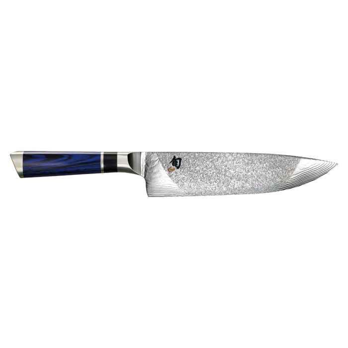

Shun Engetsu 8 inch Chef Knife:
The Shun Engetsu 8 inch Chef Knife is another in a collection of masterpieces by Shun. Baring the iconic logo that guarantees a product of the highest quality this beautiful knife boasts a Dual Core Steel blade that is engineered to stay sharp the longer you use it.
It also comes in Shuns patented "D" shape handle making it by far the most comfortable knife to use for even extended periods of time. Trust me I know.
 Old Fashioned Beef Stew
Old Fashioned Beef StewA Delicious and warming slow cooked beef stew
to keep you warm during the winter even on the coldest of nights!
 Baked Chicken Thighs
Baked Chicken ThighsExcellent all around baked chicken thighs that can be used as a main dish our as the building block to pastas soups and more!